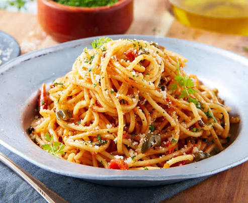

para:Dos Personas
Acompañamientos:Salsa de tomate, carne, queso, verduras, pollo, entre otros.
Nutrientes:Aporta principalmente carboidratos y energia; tambien contiene algo de proteina y, segun el tipo, fibra.
